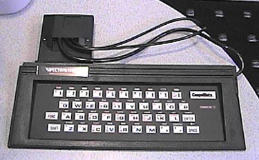

The Spectravideo "Compumate" Keyboard
Spectravideo was one of several manufacturers who
jumped on the "me too" bandwagon when Atari announced it would be producing
a computer keyboard add-on module for its Atari 2600 VCS. However
most of the other manufacturers (Atari included) only got to the prototype
and limited testing phases of their computer keyboards. Spectravideo
on the other hand actually produced and sold (although limited) its computer
keyboard add-on. The Compumate was not only just a computer
add-on, but also was a musical keyboard as well with microphone and earphone
jacks on the side of the unit. Unlike the proposed Atari "Graduate"
computer keyboard add-on, the Compumate did not have have any sort of peripheral
add-on capabilities for disk drives or printers, but did allow the connection
of a cassette recorder for taping music and program load/save capability.
